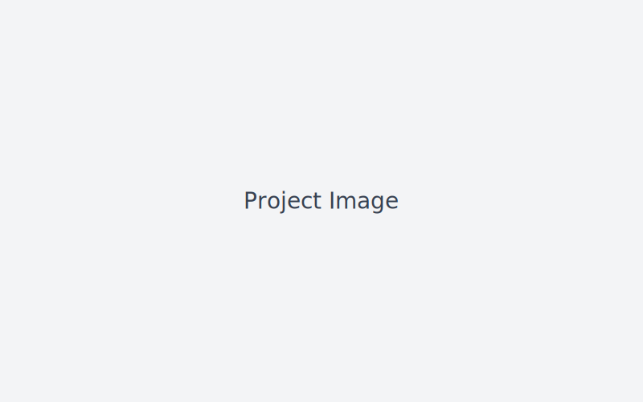

Linux-based Infotainment System
This project involved creating a Linux-based media/infotainment solution for supermarket displays and a marine vessel.
- Built on Ubuntu, managed via Webmin
- Remote update capability
- Optimised for low-maintenance operation
